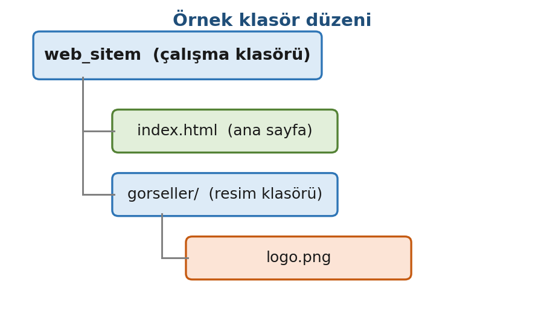
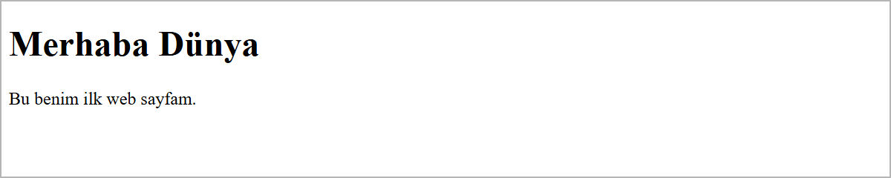

Araçlar ve İlk Web Sayfası
Bu sayfada
Bir web sayfası, tarayıcının okuyup ekranda gösterdiği ve uzantısı .html olan bir metin dosyasıdır. Bu dosya bir kod düzenleyicisinde (VS Code) yazılır; VS Code'a eklenen Live Server eklentisi de sayfayı tarayıcıda açar ve her kaydettiğinizde yeniler. Dosyaların hangi klasörde durduğu en az kod kadar önemlidir: yanlış yere kaydedilen bir sayfa ya da resim açılmaz.
1Web Nasıl Çalışır?
Bir web sayfasını açtığınızda, arka planda görünmeyen bir iletişim gerçekleşir. Bu iletişimi bir lokantaya benzetebiliriz:
- Siz müşterisiniz (tarayıcı / istemci): "Şu sayfayı istiyorum" dersiniz.
- Karşınızda mutfak vardır (sunucu): İstediğiniz sayfayı hazırlayıp gönderir.
- Aradaki garson ise internettir: siparişi götürür, hazırlanan sonucu getirir.
Tarayıcının adres çubuğuna www.google.com yazdığınızda, tarayıcınız bu adresin sahibi olan sunucuya "bu sayfayı gönder" isteğini iletir; sunucu da sayfayı geri gönderir ve tarayıcı bu sayfayı ekranda görüntüler.
| Terim | Kısaca anlamı |
|---|---|
| İnternet | Dünyadaki bilgisayarları birbirine bağlayan büyük ağ. |
| Web (WWW) | İnternet üzerindeki birbirine bağlı sayfalar bütünü. |
| Tarayıcı (browser) | Sayfaları açıp görüntüleyen program: Chrome, Edge, Firefox. |
| Sunucu (server) | Web sayfalarının barındığı ve istendiğinde gönderildiği bilgisayar. |
| İstemci (client) | Sayfayı isteyen taraf; yani sizin tarayıcınız. |
Bir web sayfası temelde üç dilden oluşur. Bu dönem ağırlıklı olarak ilk ikisi üzerinde durulacaktır:
| Dil | Görevi | Benzetme (bir insan) |
|---|---|---|
| HTML | Sayfanın iskeleti ve içeriği (başlık, yazı, resim). | İskelet / kemikler |
| CSS | Sayfanın görünümü (renk, yazı tipi, yerleşim). | Kıyafet / görünüm |
| JavaScript | Sayfanın hareketi (tıklanınca bir şey olması). | Hareket / kaslar |
CSS, 6. haftada, CSS'e Giriş konusunda ayrıntılı olarak ele alınır.
2Alan Adı (Domain), Barındırma (Host) ve Uzantılar
Hazırladığınız bir web sayfası, siz onu internette yayınlayana kadar yalnızca kendi bilgisayarınızda durur. Sayfanızın herkes tarafından internetten erişilebilir olması için iki şeye ihtiyaç vardır: bir alan adı (domain) ve bir barındırma (host / hosting) hizmeti.
2.1. Alan Adı (Domain) Nedir?
Alan adı, bir web sitesinin internetteki adresidir; örneğin www.google.com. Aslında internetteki her sunucunun sayılardan oluşan bir IP adresi vardır (örneğin 142.250.187.68 gibi). Bu sayıları akılda tutmak zor olduğundan, alan adı bu adresin kelimelerle ifade edilmiş, akılda kalıcı hâlidir.
- Tarayıcıya
www.google.comyazdığınızda, bu ad arka planda önce ilgili IP adresine çevrilir, ardından o sunucuya ulaşılır. - Her alan adı benzersizdir: aynı alan adı iki farklı kişiye ait olamaz. Başkası tarafından kullanılan bir alan adı, süresi dolup bırakılmadıkça alınamaz.
2.2. Barındırma (Host / Hosting) Nedir?
Bir web sitesi dosyalardan oluşur (.html sayfaları, resimler vb.). Bu dosyaların, ziyaretçilerin 7 gün 24 saat erişebilmesi için sürekli açık bir bilgisayarda durması gerekir. Dosyaların saklandığı bu bilgisayara sunucu (server), dosyaların burada barındırılıp yayınlanması hizmetine ise barındırma (hosting) denir.
Kendi ev bilgisayarınız bu iş için genellikle yeterli değildir; çünkü sunucunun sürekli açık kalması, hızlı bir internet bağlantısına sahip olması ve aynı anda çok sayıda ziyaretçiye hizmet verebilmesi gerekir. Bu nedenle barındırma, özel sunuculara sahip firmalardan kiralanır.
Alan adı, evinizin adresidir; hosting ise evin kendisidir (dosyalarınızın oturduğu yer). Adres olmadan kimse evi bulamaz; ev olmadan da adresin işaret edeceği bir yer olmaz. İkisi birlikte çalışır.
2.3. Alan Adı ve Hosting Nasıl Alınır?
Alan adı ve hosting, bu hizmeti satan firmalardan belirli bir süre için kiralanır (genellikle yıllık). Genel adımlar şöyledir:
- Bir domain/hosting firmasının sitesine girilir.
- İstenen alan adı yazılıp müsait mi diye sorgulanır. Alınmışsa başka bir ad denenir.
- Müsaitse alan adı ve bir hosting paketi seçilir, ücreti ödenir. Süre sonunda hizmet yenilenir.
- Hazırlanan site dosyaları hosting'e yüklenir (upload) ve site, alınan alan adı üzerinden yayına girer.
Bu derste sitemizi internette yayınlamayacağız; tüm çalışmaları kendi bilgisayarımızda yapacağız. Yine de gerçek bir sitenin internette nasıl yayına girdiğini bilmeniz önemlidir.
2.4. Alan Adı Uzantıları (.com, .edu, .mil ...)
Alan adının sonundaki kısım (.com, .edu gibi) sitenin türü hakkında bilgi verir. En yaygın uzantılar ve anlamları:
| Uzantı | Anlamı | Örnek |
|---|---|---|
.com | Ticari kuruluşlar (company) | www.hepsiburada.com |
.edu | Eğitim kurumları (education) | www.harvard.edu |
.gov | Devlet kurumları (government) | www.turkiye.gov.tr |
.org | Ticari olmayan/kâr amacı gütmeyen kuruluşlar (organization) | www.wikipedia.org |
.mil | Askeri kurumlar (military) | www.army.mil |
.net | Ağ ve servis sağlayıcılar (network) | www.speedtest.net |
Adresin en sonunda ayrıca bir ülke kodu bulunabilir: .tr (Türkiye), .uk (İngiltere), .de (Almanya) gibi. Örneğin www.ankara.edu.tr adresinde edu bunun bir eğitim kurumu, tr ise Türkiye'ye ait olduğunu gösterir.
3Çalışma Araçları
Web sayfası yazmak için pahalı bir program gerekmez. İhtiyaç duyulan iki araç vardır ve her ikisi de ücretsizdir:
- Bir tarayıcı: Bilgisayarınızda hâlihazırda bulunur (Chrome önerilir).
- Bir kod editörü (kodun yazılacağı program): Visual Studio Code (VS Code).
3.1. VS Code Kurulumu
VS Code, kod yazmak için tasarlanmış ücretsiz bir editördür. Word'e benzetebilirsiniz; ancak metin yerine kod yazmak için kullanılır.
- Adres: https://code.visualstudio.com
- Siteye giriniz, Download düğmesine basınız ve işletim sisteminize uygun sürümü indiriniz (Windows için
.exe). - İndirdiğiniz dosyayı çalıştırınız; kurulum boyunca İleri (Next) seçeneğiyle işlemi tamamlayınız.
Kurulum sırasında "Open with Code" seçeneklerini işaretlerseniz, bir klasöre sağ tıklayarak klasörü doğrudan VS Code'da açabilirsiniz. Bu, çalışmanızı kolaylaştırır.
3.2. Live Server Eklentisi
Yazdığınız sayfayı tarayıcıda görüntülemenin en pratik yolu Live Server eklentisidir. Bu eklenti sayfanızı tarayıcıda açar ve kodu her kaydettiğinizde sayfayı otomatik olarak yeniler. Böylece dosyayı elle tekrar tekrar açmanız gerekmez.
Kurulumu için:
- VS Code'da sol taraftaki Eklentiler (Extensions) simgesine tıklayınız (kutucuklardan oluşan simge) veya
Ctrl+Shift+Xtuşlarına basınız. - Arama kutusuna Live Server yazınız.
- Ritwick Dey imzalı "Live Server" eklentisini bulup Install seçeneğine tıklayınız.
Kullanımı: Bir .html dosyası açıkken sağ alttaki Go Live yazısına tıklayınız ya da sayfaya sağ tıklayıp Open with Live Server seçeneğini seçiniz. Sayfanız tarayıcıda açılır.
Live Server kurulu değilse .html dosyasına Dosya Gezgini'nde çift tıklayarak sayfayı tarayıcıda açabilirsiniz. Bu durumda sayfa kendiliğinden yenilenmez: kodu kaydedin (Ctrl + S), sonra tarayıcıda F5 tuşuyla sayfayı yenileyin.
4Dosya ve Klasör Mantığı (En Önemli Kısım)
Bir sayfanın ya da resmin açılmaması çoğu zaman kod hatasından değil, dosyanın yanlış klasöre kaydedilmesinden kaynaklanır.
Kural basittir: Her web projesi kendi klasöründe durur. O projeye ait bütün dosyalar (sayfalar, resimler) o klasörün içinde bulunur. Örnek bir düzen aşağıda verilmiştir:

Burada:
web_sitem→ projenin ana (çalışma) klasörüdür. VS Code'da bu klasör açılır (Dosya → Klasör Aç; İngilizce arayüzde File → Open Folder...).index.html→ sitenin ana sayfasıdır.gorseller/→ resimler karışmasın diye ayrı bir klasörde tutulur.
4.1. index.html ve Varsayılan Sayfa
Bir siteye yalnızca adresini yazıp girdiğinizde (örneğin www.ornek.com), belirli bir dosya adı belirtmemiş olursunuz. Bu durumda sunucu, ilgili klasörde bir varsayılan sayfa (default page) arar ve bulduğu ilk sayfayı açar.
Sunucu bu sayfaları belirli bir sıraya göre arar. En yaygın varsayılan sayfa index.html dosyasıdır; ancak sunucunun kullandığı teknolojiye göre başka adlar da varsayılan sayfa olabilir:
| Dosya adı | Kullanıldığı teknoloji |
|---|---|
index.html / index.htm | Düz HTML siteleri (en yaygın) |
index.php | PHP ile hazırlanan siteler |
default.aspx | ASP.NET (Microsoft) siteleri |
default.php / default.htm | Bazı sunucu yapılandırmaları |
Buradan iki önemli sonuç çıkar:
- Bir sitenin çalışması için ana sayfanın adının mutlaka
index.htmlolması zorunlu değildir. Sunucu, varsayılan sayfalardan hangisini önce bulursa onu açar. Yaniindex.htmlolmasa da site çalışabilir; sunucu sıradaki varsayılan sayfayı arar. - Eğer istenen adreste varsayılan sayfalardan hiçbiri bulunamazsa, sunucu ayarına göre bir hata sayfası (örneğin 404 Sayfa Bulunamadı ya da 403) gösterir veya klasördeki dosyaları listeler.
404, "istenen sayfa sunucuda bulunamadı" anlamına gelen bir hata kodudur. Bu derste düz HTML kullanacağımız için ana sayfamızı index.html adıyla kaydedeceğiz; bu, en yaygın ve en güvenli tercihtir.
4.2. İsimlendirme Kuralları
Dosya ve klasör adlarında aşağıdaki kurallara uyunuz; aksi hâlde sayfanız veya resimleriniz bazı durumlarda açılmayabilir:
| Kural | Yanlış ❌ | Doğru ✅ |
|---|---|---|
| Türkçe karakter kullanmayınız (ç, ş, ı, ö, ü, ğ) | çiçekçi.html | cicekci.html |
| Boşluk kullanmayınız | ana sayfa.html | ana_sayfa.html veya anasayfa.html |
| Küçük harf tercih ediniz | Index.HTML | index.html |
| Uzantıyı doğru yazınız | index.htm l | index.html |
Boşluk yerine alt çizgi (_) kullanınız ve Türkçe harf kullanmayınız. Böyle adlandırılan dosyalar başka bir bilgisayara ya da sunucuya taşındığında da sorunsuz açılır.
5İlk Sayfa: index.html
Şimdi ilk sayfayı oluşturalım. VS Code'da web_sitem klasörünü açınız, içinde index.html adında yeni bir dosya oluşturunuz ve aşağıdaki kodu yazınız:
<!DOCTYPE html>
<html lang="tr">
<head>
<meta charset="utf-8">
<title>İlk Sayfam</title>
</head>
<body>
<h1>Merhaba Dünya</h1>
<p>Bu benim ilk web sayfam.</p>
</body>
</html>
Dosyayı kaydediniz (Ctrl + S), ardından Go Live ile açınız. Tarayıcıda aşağıdaki sonucu görürsünüz:

5.1. Bu Kod Ne Yapıyor?
Her satırın belirli bir görevi vardır. Bu kodun tamamını şimdiden ezberlemeniz beklenmemektedir; 2. haftada, HTML İskeleti ve Metin Etiketleri konusunda, bu iskelet ayrıntılı olarak ele alınacaktır.
| Satır | Görevi |
|---|---|
<!DOCTYPE html> | "Bu bir HTML5 sayfasıdır" bilgisini verir. Her sayfanın ilk satırıdır. |
<html lang="tr"> | Sayfanın başladığını ve dilinin Türkçe olduğunu belirtir. |
<head> | Sayfanın görünmeyen bilgileri (başlık, karakter kodlaması) burada yer alır. |
<meta charset="utf-8"> | Türkçe harflerin (ç, ş, ğ...) düzgün görünmesini sağlar. |
<title>İlk Sayfam</title> | Tarayıcı sekmesinde görünen başlıktır. |
<body> | Sayfada görünen her şey burada yer alır. |
<h1> | En büyük başlık (heading 1). |
<p> | Bir paragraf (paragraph). |
HTML etiketleri <...> ile açılır, </...> ile kapatılır. Örneğin <h1> etiketini açtıysanız mutlaka </h1> ile kapatmalısınız. Etiketi kapatmayı unutmak en sık yapılan hatalardan biridir.
charset="utf-8" neden önemlidir?Bu satır, tarayıcıya sayfanın hangi kodlamayla yazıldığını bildirir. Yazılmazsa sayfa kendi bilgisayarınızda düzgün görünebilir; ancak kodlamayı bildirmeyen bir sunucuda Dünya kelimesi Dünya gibi bozuk görünür. Bu yüzden her sayfaya yazılır.
6Sıkça Yapılan 5 Hata
| Hata | Sonuç | Çözüm |
|---|---|---|
Dosyayı .html yerine .txt kaydetmek | Sayfa oluşmaz; kod düz yazı olarak (çoğu zaman Not Defteri'nde) açılır | Uzantının .html olduğundan emin olunuz |
Etiketi kapatmayı unutmak (<h1> var, </h1> yok) | Sonraki yazılar da başlık gibi büyük ve kalın görünür | Her açılan etiketi kapatınız |
| Klasör/dosya adında Türkçe harf veya boşluk | Sayfa/resim bazen açılmaz | Türkçe harf ve boşluk kullanmayınız |
<meta charset="utf-8"> yazmamak | Bazı sunucularda Türkçe harfler bozuk çıkar | <head> içine bu satırı ekleyiniz |
| Dosyayı kaydetmeden Go Live yapmak | Değişiklik ekranda görünmez | Önce Ctrl + S ile kaydediniz |
7Bu Haftanın Özeti
- Web; istemci (tarayıcı) ile sunucu arasındaki iletişimle çalışır. Sayfalar HTML (iskelet), CSS (görünüm) ve JavaScript (hareket) ile oluşturulur.
- Alan adı (domain) bir sitenin internetteki adresidir; barındırma (hosting) ise dosyaların sürekli açık bir sunucuda tutulup yayınlanmasıdır.
- Alan adı uzantıları sitenin türünü gösterir:
.com,.edu,.gov,.mil... - Web sayfaları VS Code ile yazılır, Live Server ile tarayıcıda görüntülenir.
- Her proje kendi klasöründe durur; ana sayfa genellikle
index.htmladıyla kaydedilir. Varsayılan sayfa bulunamazsa sunucu bir hata sayfası (örneğin 404) gösterebilir. - Dosya ve klasör adlarında Türkçe karakter ve boşluk kullanılmaz.
8Konu Sonu Testi
-
Bir web sitesinin ana sayfası genellikle hangi isimle kaydedilir?
- a)
home.php - b)
index.html - c)
sayfa.txt - d)
main.css
Cevabı göster
bEn yaygın varsayılan sayfaindex.html'dir. - a)
-
Sayfanın tarayıcı sekmesinde görünen başlığını hangi etiket belirler?
- a)
<body> - b)
<h1> - c)
<title> - d)
<p>
Cevabı göster
c<title>sekme başlığını belirler;<h1>ise sayfanın içindeki başlıktır. - a)
-
Türkçe harflerin düzgün görünmesi için
<head>içine hangi satır yazılır?- a)
<title> - b)
<meta charset="utf-8"> - c)
<h1> - d)
<!DOCTYPE html>
Cevabı göster
b<meta charset="utf-8">Türkçe karakter desteği sağlar. - a)
-
Aşağıdaki dosya adlarından hangisi kurallara uygundur?
- a)
Ana Sayfa.html - b)
çiçekçi.html - c)
ana_sayfa.html - d)
sayfa 1.HTML
Cevabı göster
cTürkçe harf ve boşluk yoktur, alt çizgi kullanılmıştır. - a)
-
Web sitesi dosyalarının, ziyaretçilerin 7/24 erişebilmesi için sürekli açık bir sunucuda saklanıp yayınlanması hizmetine ne ad verilir?
- a) Alan adı (domain)
- b) Barındırma (hosting)
- c) Tarayıcı (browser)
- d) İstemci (client)
Cevabı göster
bDosyaların saklanıp yayınlandığı hizmet barındırmadır (hosting); alan adı sitenin adresidir.
9Uygulamalar
Görev: Kendinizi tanıtan tek sayfalık bir web sayfası hazırlayınız. Sayfada bir başlık ve iki paragraf bulunsun.
Çözüm:
<!DOCTYPE html>
<html lang="tr">
<head>
<meta charset="utf-8">
<title>Hakkımda</title>
</head>
<body>
<h1>Ahmet Yılmaz</h1>
<p>Merhaba, ben bilgisayar teknolojileri öğrencisiyim.</p>
<p>Bu sayfayı Web Arayüz Tasarımı dersinde hazırladım.</p>
</body>
</html>
Adımlar:
web_sitemklasörünü VS Code'da açınız.hakkimda.htmladında yeni bir dosya oluşturunuz (Türkçe harf ve boşluk kullanmadan).- Yukarıdaki kodu yazıp kaydediniz (
Ctrl+S). - Go Live ile tarayıcıda açınız. Kendi adınızı ve bilgilerinizi yazarak içeriği değiştiriniz.
10Sınıf Uygulaması
Senaryo: Dönem boyunca üzerinde çalışacağınız çalışma ortamını kurun ve ilk sayfanızı tarayıcıda açın.
Yapılacaklar:
- Masaüstünde
web_sitemadında bir klasör oluşturun. - VS Code'da Dosya → Klasör Aç (İngilizce arayüzde File → Open Folder...) ile bu klasörü açın.
- İçinde
index.htmladında yeni bir dosya oluşturun ve temel iskeleti (<!DOCTYPE html>,<html>,<head>,<body>) yazın. <title>içine bir başlık,<h1>içine kendi adınızı, bir<p>içine bölümünüzü yazın.- Go Live ile sayfayı tarayıcıda açın.
web_sitemiçinde, 3. haftada (Bağlantılar ve Görseller) kullanmak üzere birgorsellerklasörü de oluşturun.
Beklenen sonuç: Tarayıcı sekmesinde başlığınız; sayfada adınız (büyük başlık) ve bölümünüz görünür. Türkçe harfler düzgün çıkar.
İpuçları: Türkçe harfler için <head> içine <meta charset="utf-8"> eklemeyi unutmayın. Dosya/klasör adlarında Türkçe karakter ve boşluk kullanmayın.
11Notlar ve İpuçları
- Çalışmaya başlarken VS Code'da tek bir dosyayı değil,
web_sitemklasörünü açın (Dosya → Klasör Aç; İngilizce arayüzde File → Open Folder...). Sol taraftaki gezginde projenin bütün dosyalarını görürsünüz. - Kaydedilmemiş bir dosyanın sekmesinde, dosya adının yanında bir nokta görünür. Nokta kaybolmadıysa dosya kaydedilmemiştir;
Ctrl+Sile kaydedin. - Dosya Gezgini'nde dosya adı uzantılarını görünür yapın. Böylece
index.html.txtgibi yanlış kaydedilmiş dosyaları hemen fark edersiniz. - Çalışmalarınızı her dersin sonunda USB belleğe kaydedin. Sonraki haftaların çalışmaları öncekilerin üzerine kurulur.
- Tarayıcıda sayfaya sağ tıklayıp Sayfa kaynağını görüntüle derseniz, tarayıcının aldığı HTML kodunu görürsünüz. Başka sitelerin nasıl yazıldığını incelemenin en kolay yoludur.
12Çalışma Soruları
index.htmlsayfasındaki<h1>başlığını kendi adınızla değiştiriniz.- Sayfaya ikinci bir paragraf (
<p>) ekleyiniz: en sevdiğiniz dersi yazınız. <title>etiketindeki yazıyı değiştiriniz ve tarayıcı sekmesinde nasıl değiştiğini gözlemleyiniz.web_sitemklasörünün içindeiletisim.htmladında ikinci bir sayfa oluşturunuz; içine bir başlık ve telefon/e-posta bilgisi yazınız.
Kaynakça
- MDN: How the web works (İngilizce)
- MDN: What is a Domain Name? (İngilizce)
- MDN: Dealing with files (İngilizce)
- Visual Studio Code on Windows (İngilizce)
- Live Server (Visual Studio Marketplace) (İngilizce)
Bu haftanın Sınıf Uygulaması sayfanın sonundadır. Önce konu anlatımını okuyun, sonra uygulamayı kendi bilgisayarınızda yapın.